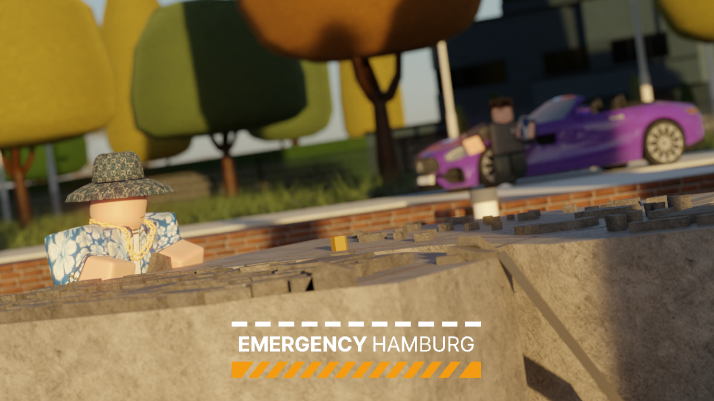

About Emergency Hamburg
Emergency Hamburg is an emergency services role-playing game on the Roblox platform, where you can be a police officer, citizen, bus driver, car mechanic, truck driver, firefighter, medic, or criminal in the German city of Hamburg.
▶ Play now on Roblox